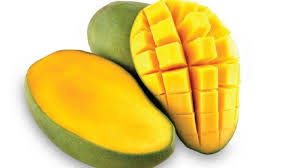

tentangbuah.com
mangga

Mangga adalah Buah yang memiliki nama latin
Mangifera Indica L ini merupakan buah yang tumbuh di daerah
tropis dan memiliki bentuk oval untuk beberapa jenis serta bentuk
bulat untuk jenis tertentu.
Warna buah mangga yang sudah masak adalah oranye kekuningan serta
kulit yang halus. Buah yang dijuluki King Of The Fruits atau rajanya
buah-buahan karena kepopulerannya, tumbuh subur di Indonesia. Oleh
sebab itu, Indonesia memiliki beragam jenis mangga yang memiliki
keunikan dan cita rasa tersendiri.
khasiat mangga
- Mencegah penyakit asma
- Mencegah kanker
- Menjaga kesehatan mata
- Baik untuk jantung
- Melancarkan pencernaan
- Menjaga kesehatan kulit dan rambut
DAFTAR HARGA
| Jenis Apel | Harga | |
|---|---|---|
| per kilo | per biji | |
| Apel manalagi | 50.000 | 5000 |
| Apel fuji | 60.000 | 6000 |
| Apel anna | 70.000 | 7000 |
| Apel Merah | 55.000 | 5.500 |